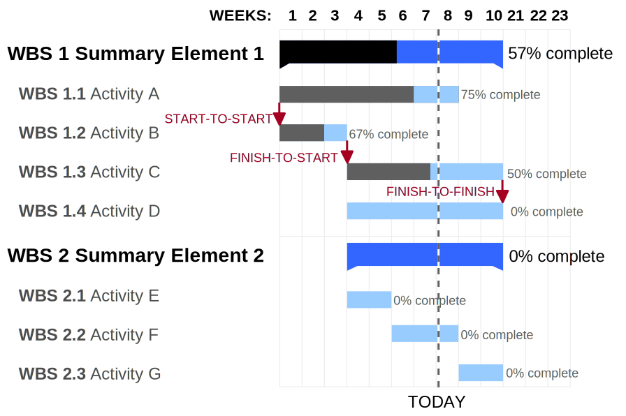
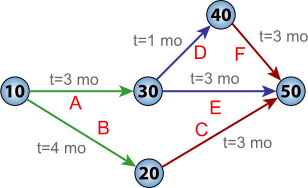

class: center, middle, main-title # Software Engineering Project management --- ## Plan - Today - Project management and planning - Next - Preparations for the second delivery - Several lectures about software design ??? Precondition for taking the exam: 1.5+ from the first 3 deliveries --- class: middle, center ## Management ??? Plan: - management in general - project management - tools LT: Vadyba --- exclude: true ## Management in general > Management is what **managers** do during their working hours. > <br><br>— <cite>Leonard Holmes, The Dominance of Management: A Participatory Critique</cite> --- ## Richard Hamming in "You and Your Research" ??? Some context: Richard Hamming (great mathematician) - talking about "Why do so few scientists make significant contributions and so many are forgotten in the long run?" "As far as I know, each of you has one life to live. Why shouldn't you do significant things in this one life, however you define significant? I'm not going to define it - you know what I mean. But so far as I know, and I've been told by others, much of what I say applies to many fields." He is a scientist, so he talks about research. And by "significant research" he's talking about Nobel-Prize type of work. "Outstanding work is characterized very much the same way in most fields, but I will confine myself to science." -- > If you want to be a great researcher, you won't make it being president of the company. > For instance, I went to my boss, Bode, one day and said, "*Why did you ever become department head? Why didn't you just be a good scientist?*" > He said, "*Hamming, I had a vision of what mathematics should be in Bell Laboratories. And I saw if that vision was going to be realized, I had to make it happen; I had to be department head.*" > When your vision of what you want to do is what you can do single-handedly, then you should pursue it. > **The day your vision, what you think needs to be done, is bigger than what you can do single-handedly, then you have to move toward management.** > And the bigger the vision is, the farther in management you have to go. > <br><br>— <cite>[Richard Hamming, "You and Your Research"](https://www.cs.virginia.edu/~robins/YouAndYourResearch.html)</cite> --- ## Management in general > Management involves the **activities** undertaken by one or more persons > for the purpose of **planning and controlling the activities of others** > in order **to achieve objectives** that could not be achieved by the others acting alone. > <br><br>— <cite>Richard H. Thayer</cite> ??? Notice: more than you alone can do + more than others alone can do. --- exclude: true ## Software engineering management > Software engineering management can be defined as the **application of > management activities**—planning, coordinating, measuring, monitoring, > controlling, and reporting—**to ensure** that software products and > software engineering services **are delivered** efficiently, effectively, > and to the benefit of stakeholders. > <br><br>— <cite>SWEBOK 3.0</cite> --- ## Five management functions 1. Planning ??? Planning: - Defining goals and objectives, how they will be acomplished, and documenting them! - Example: What needs to be done, who will do it and in what order? -- 1. Organizing ??? Organizing: - Defining organizational structure, assigning roles and responsibilities, allocating resources - Required when two or more people are involved (i.e. always) - Example: Introducing order: organizing how things will be documented. What tools will be used, etc. -- 1. Staffing ??? Staffing (LT: Komandos formavimas): - Hiring and training people, building teams - People are the main asset (take people away and code is useless) - A manager primarily works with people - Main challenge - putting the right people in the right seats. Optimizing return from all employees to benefit the entire enterprise - Example: HR managers vs project managers. Promoting, knowledge sharing, team chemistry, etc. - Trivia: "People are promoted to their level of incompetence" -- 1. Leading ??? Leading: - Motivating, communicating, guiding and aligning people. Helping solve problems. Creating an environment that facilitates both - Main challenge - achieving effectiveness and unity of action (Demo: vectors that add up) -- 1. Controlling ??? Controlling: - Are we on track? Are we [effective](https://cromhallchapel.files.wordpress.com/2015/07/dontreinventthemap-6ba62b8ba05d4957d2ed772584d7e4cd.png)? Why not? How can we get better? - Accountability (LT: atskaitomybė) requires monitoring. - Example: a company shows unexpectedly bad financial results. Who is accountable? -- **Manager** - a person who is primarily responsible for the five management functions. -- But non-managers also benefit from improving their management skills! --- ## Universality of management - Notice how all of the before is generic -- - Management is fundamentally the same - in all types of organizations - in all departments - at all organizational levels ??? - For example - Sales manager - Engineering manager - Team manager - Project manager --- class: middle, center ## Projects --- ## Project > A project is a **temporary** endeavor undertaken to create a **unique** product, service or result. > <br><br>— <cite>PMBOK</cite> ??? Some definitions also add "and are executed under agred-upon constraints (i.e. scope, timeline, budget/resources)". -- A project always has: - a measurable one-time goal - a defined start and end time ??? Not a project: - "Business as usual" - continuous improvements to product - Build a product until it is finished Also: - Work is typically done in projects - Despite alternative ideas like [#noprojects](https://www.infoq.com/minibooks/noprojects-value-culture/) --- ## Initiating a project - There is an idea (goal) and a sponsor -- - And likely a project manager -- - A *project charter* is created ??? A document of a few pages that typically describes: - Goals or deliverables - Organizational and reporting structure - Main milestones - Stakeholders - Allocated resources (budget, people, assets) - Constraints - Alternatives considered -- - Fasibility is evaluated -- - Project is signed off for execution --- class: middle, center ## Project planning ??? - An infinite number of combinations how to run a project - We want to select that which maximizes our chances of success - Always about the future, which is uncertain (therefore, forecasting (LT: prognozavimas) might be a more appropriate term) - Selecting the best alternative out of many available - Stakeholders may require access to parts of project plan: - Higher management - Customers - Subcontractors - Suppliers - Investors - Banks --- ## Planning a project - Determine and define deliverables ??? What are the main things that need to be done? (Milestones) -- - Identify quality requirements ??? How good do we need to make it? (Requirements work) -- - Select (and tailor) SDLC model ??? What will be the main stages in our project? - SDLC recommendation: iterative, incremental, or iterative incremental. - Relationship between SDLC and deliverables. - Recommendation: zero feature, 2 intermediate, final. -- - Estimate effort, schedule and cost ??? How much work is it? When can we complete it and for how much? -- - Identify risks ??? Why could we fail? -- - Allocate people and other resources ??? Who will do what and using what resources? -- - Set up monitoring, controlling and reporting ??? How will we measure progress and keep everyone informed? Next: - Estimation - Risks - Control --- ## Estimation - How much work is it and when can it be finished? ??? How many hours of work are needed and on which date can you deliver? -- - It's a difficult question ??? What might help: - Divide and conquer (decomposition) - Delaying estimation (more certainty) - Base estimates on other similar projects - Compare with empirical models - COCOMO: `E = a + b(S)^c` - Use optimistic, most likely and pessimistic estimation - PERT: `(O + 4M + P)/6` -- - Almost no fixed price bids in the industry -- - One of the primary reasons why projects fail --- exclude: true ### Estimation - Size - T-Shirt sizes - Man-months - Story points - Function points - Lines of code --- exclude: true ### Estimation - Improving accuracy - Delay estimation - Base estimates on other similar projects - Divide and conquer (decomposition) - Compare with empirical models - COCOMO: `E = a + b(S)^c` - Use optimistic, most likely and pessimistic estimation - PERT: `(O + 4M + P)/6` --- ### Estimation: WBS <img src="../../assets/03-wbs.png" width="65%"/> ??? PMBOk definition: "hierarchical decomposition of the total scope of work to be carried out by the project team to accomplish the project objectives and create the required deliverables." The WBS construction technique employing the 100% rule during WBS construction. Progressive elaboration. WBS includes 100% of the work defined by the project scope and captures all deliverables – internal, external, interim – in terms of the work to be completed, including project management. the sum of the work at the "child" level must equal 100% of the work represented by the "parent" Estimating effort or cost (scope), but not duration. --- ### Estimation: Gannt chart  ??? Tasks on the vertical axis. Activity durations on the horizontal axis. A Gantt chart showing three kinds of schedule dependencies (in red) and percent complete indications. Modern Gantt charts also show the dependency relationships between activities and current schedule status. Estimating schedule. Summary elements would be e.g. deliveries. --- ### Estimation: Critical path  ??? PERT chart for a project with five milestones (10 through 50) and six activities (A through F). The project has two critical paths: activities B and C, or A, D, and F – giving a minimum project time of 7 months with fast tracking. Activity E is sub-critical, and has a float of 1 month. If something on the critical path is late, all project will be late. Example: car manufacturing plant where engine takes most of the time --- ## Demo: work breakdown and planning - MS Excel / Google Sheets -- - Trello ([Kanban board](https://trello.com/b/LGHXvZNL/kanban-template), [Scrum board](https://trello.com/b/ZqN99gGN/agile-sprint-board)) - Jira ([Scrum board](https://solardesigntool.atlassian.net/secure/RapidBoard.jspa?rapidView=3), [Scrum backlog](https://solardesigntool.atlassian.net/secure/RapidBoard.jspa?rapidView=3&view=planning.nodetail&selectedIssue=SOL-1367&issueLimit=100)) ??? Kanban and Scrum - Agile software development methods -- - [Asana](https://asana.com/), many other tools --- ## Risk > Risk is characterized by the **probability of an event** that will result in a negative > impact **plus a characterization of the negative impact** on a project. > <br><br>— <cite>SWEBOK 3.0</cite> --- ### Risk: A few examples - Estimates are inaccurate -- - Scope creep inflates scope -- - Conflicting stakeholder interests -- - Resource turnover -- - Lockdown due to pandemic -- - Legacy components lack docummentation -- - Training isn't available -- - Exchange rate variabilities --- ## Risk Management > Risk management entails **identification** of risk factors and analysis of the **probability** > and potential **impact** of each risk factor, **prioritization** of risk factors, and > development of risk **mitigation strategies** to reduce the probability and minimize the > negative impact if a risk factor becomes a problem. > <br><br>— <cite>SWEBOK 3.0</cite> --- ## Assessing risk Qualitative - e.g. scale of `Negligible / Important / Catastrophic` ??? LT: Kokybinis -- Quantitative - `Risk exposure = Probability * Cost` ??? LT: Kiekybinis --- ## Assessing risk: Example - **Risk:** Following end-user testing, user guide may need to be improved -- - **Probability:** 40% -- - **Loss size:** 5 man-days -- - **Risk exposure:** 2 man-days (= 5 * 0.4) ??? Insurance works on a similar principle, except price would be e.g. 3 man-days --- class: middle, center ## Project monitoring and control --- ## Project monitoring - It is *impossible* to measure the rate of progress except with reference to a plan. -- - Data is the foundation of intelligent decision-making -- - Software engineers do not produce anything physical -- - Lack of visibility makes it difficult to monitor and control software projects -- - Software projects must produce *additional* artifacts that are visible, e.g.: -- - Design documents/prototypes -- - Change logs -- - Reports -- - Project/status meetings -- - Client surveys (e.g. satisfaction level) --- ## Project control - Monitoring provides basis for making decisions -- - Adherence to plans should be assessed: - At predetermined intervals - Continuously -- - Goal is to keep plans aligned with reality -- - This can mean: - Taking corrective actions - Modifying plans --- ## Triple constraint  ??? What if we already see that project will be late and we need to take corrective actions? "Fast, cheap, with all features" - choose two. 1. The quality of work is constrained by the project's budget, deadlines and scope (features). 2. The project manager can trade between constraints. 3. Changes in one constraint necessitate changes in others to compensate or quality will suffer. --- ## Corrective actions The smaller the deviation, the easier it is to correct. -- > Adding human resources to a late software project makes it later. > <br><br>— <cite>Brook's law</cite> ??? In practice, however, trading between constraints is not always possible. For example, throwing money (and people) at a fully staffed project can slow it down. Keep this in mind in your projects --- ## Demo: project monitoring and control - Status reports - What did I accomplish yesterday? - What is my goal for today? - What hinders/blocks me? - What retrospective points do I have? ??? Demo: Slack -- - [Iteration reports](https://solardesigntool.atlassian.net/secure/RapidBoard.jspa?rapidView=3&projectKey=SOL&view=reporting&chart=sprintRetrospective&sprint=87) -- - [Other reports](https://solardesigntool.atlassian.net/secure/RapidBoard.jspa?projectKey=SOL&rapidView=3&view=reporting&chart=controlChart) --- ## Key takeaways - Management is about enabling groups of people to achieve a shared goal -- - Management is universal -- - What goes into planning and controlling project execution -- - Understanding of estimation and risk management --- class: middle, center # Questions?